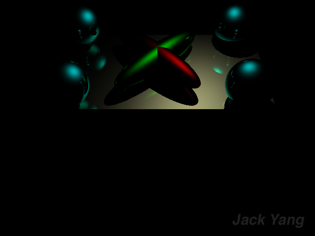

Ray Tracer Project
Computer Graphics II
UC San Diego (COGS 168)
Background
This are some images I've rendered using a ray tracer I wrote in ~ 3 weeks combined in the UCSD classes Computer Graphics and Computer Graphics II. Without acceleration structures, the rendering of scene7 took about half an hour. Most other scenes took under a minute. I used FreeImage to export the PNGs and glm for matrix calculations. OpenMP was also used to optimize intersection testing.
